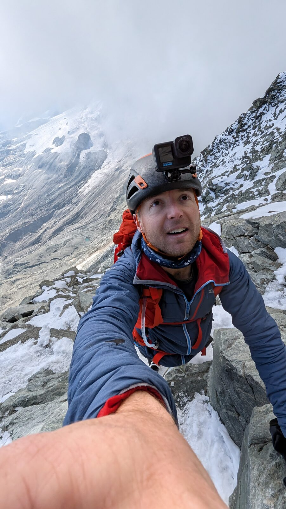

In early August 2025 a friend from work, who I also count as a genuine friend, invited me to join a group of six going for the Matterhorn. I told him plainly what I was and was not: very fit, and about to get fitter, but with no technical skill worth the name. No confidence on rope, no abseiling, no real rock. He said that was fine. I believed him, and I trained hard for a month.
I arrived in Visp to find him having a beer. I had asked, a month earlier, that we all stay off the drink in the run-up. The Matterhorn kills people every summer. The next day, on the walk from the lift to the Hörnli Hut, he took an hour and a half longer than me. That evening he was having another one...
The morning it came apart
We were up at 3:30. Ten minutes out of the hut you hit a wall, and overnight it had snowed, so we were in crampons from the very first moves, at the back of a queue, with no guide. We were slow. By the top of that first wall my partner was finished. We stopped behind a statue of the Virgin to gather ourselves and I told him he had to stop. He agreed, which I respect him for.
So I went on alone, and I felt fantastic. I passed groups. I reached the Solvay Hut at 4,003 m around eight in the morning. And then I looked at the section just below it that I had come up (steep, committing, the kind of ground where a slip is not a slip) and understood I had climbed something I could not safely reverse on my own.
The couple in our group had already turned back. The two strongest, a trail runner and an experienced mountaineer, reached the hut. I wanted to keep going. The mountaineer said no. To continue he would have to short-rope me, manage a rope of three, and lower me on the descent, and that was not a risk he was taking. He was right and I argued anyway. Then he lowered me down the bad section and I walked back to the hut on my own.
Great friends and reliable ropemates are different qualifications.
I posted it that night: today I failed, we turned back, that was the right call. I would post it again. The mountain was not the problem. The problem was that six people who had never climbed together had no way of judging each other under exposure, and I had no technical skill to fall back on.
What did I change for 2026?
My father saw the posts. For Christmas he offered to pay for a guide, I think mostly because he was frightened for me, and I am grateful to him for it.
Then I did the part that actually mattered. In August 2026 I spent a week in the Valais with my friend Anthony Bracegirdle and climbed three summits before going anywhere near Zermatt: the Üssers Barrhorn at 3,610 m on the 17th, Weissmies at 4,017 m on the 19th, and the Breithorn traverse at 4,164 m on the 22nd. That last one was the test piece.
Anthony pulled out of the Matterhorn after the traverse. That closes the story rather than spoiling it. A partner who reads his own limit correctly is exactly what 2025 was missing.
24 August 2026
I booked two nights at the Hörnli Hut on purpose. I did not want to drop straight from that summit to the valley. My father came up to the hut for both nights. A hot season with rockfall and bad weather on the 23rd pushed the summit day to the 24th, which cost us the overlap: he was not there when I came down. That is the one thing about the day I would change.
Wake at four. Away at 04:50, second in the line (local guides get priority), and Emmanuel set a pace from the door that had my heart going immediately. We passed the party ahead. First group on the mountain! Solvay at 4,003 m, crampons on just above it, then the fixed ropes.
The ropes were the only part that beat me up. An overnight frost had glazed them, I was climbing in two pairs of gloves, and every grab slid straight back down. I got through that section on stubbornness rather than technique, and I say so because it is true.

Swiss summit at about 08:10, at 4,478 m. The Italian cross, 4,476 m, at 08:17. Back at the hut by 11:30. Three hours twenty up, against a standard guided allowance of four to five.
The number I actually care about is the twelve months in between.